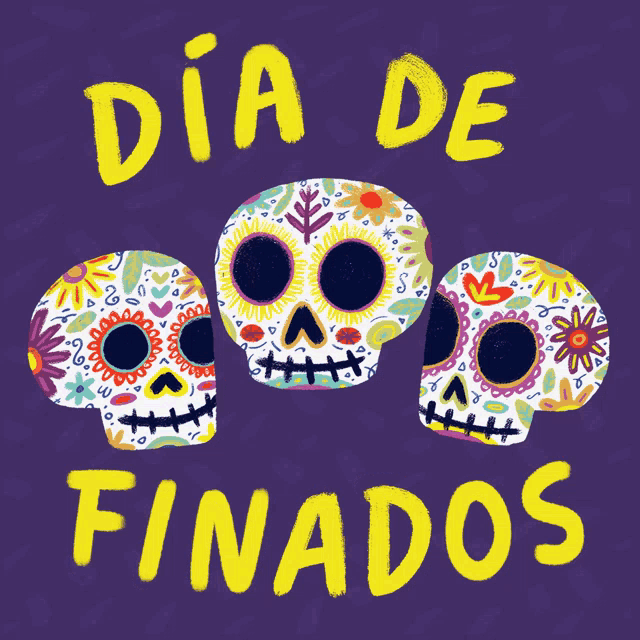

Significado: A data é um momento para celebrar a memória de quem partiu,
focando na esperança cristã da ressurreição e vida eterna, e não apenas no luto.
Tradições: É comum frequentar missas e cultos, visitar cemitérios, acender velas (simbolizando a luz e a fé)
e colocar flores (símbolo de vida) nos túmulos.
Origem: Instituído no final do século X (ano 998) pelo monge beneditino Odilon de Cluny,
na França, a prática foi oficializada para dedicar um dia aos mortos.